(Bonus) Tutorial 5: Replay#
Week 2, Day 4: Macro-Learning
By Neuromatch Academy
Content creators: Hlib Solodzhuk, Ximeng Mao, Grace Lindsay
Content reviewers: Aakash Agrawal, Alish Dipani, Hossein Rezaei, Yousef Ghanbari, Mostafa Abdollahi, Hlib Solodzhuk, Ximeng Mao, Grace Lindsay, Alex Murphy
Production editors: Konstantine Tsafatinos, Ella Batty, Spiros Chavlis, Samuele Bolotta, Hlib Solodzhuk, Alex Murphy
Tutorial Objectives#
Estimated timing of tutorial: 40 minutes
Replay in reinforcement learning (RL) refers to the process where agents revisit and learn from past experiences stored in memory, rather than solely from new interactions with their environment. This mirrors how mammals, particularly during sleep, reactivate neural patterns from recent experiences to consolidate memories and extract generalizable patterns. In artificial RL systems, experience replay enables more efficient learning by breaking temporal correlations between consecutive experiences and allowing multiple learning updates from single experiences (runs of a series of steps in an RL experiment). This biologically inspired approach has proven crucial for deep RL algorithms like DQN, demonstrating how computational models can both draw from and inform our understanding of biological intelligence.
In this tutorial, you will discover what replay is and how it helps to solve the continual learning problem we’ve been investigating over today’s tutorials.
If you want to download the slides: https://osf.io/download/t36w8/
<__main__._NoOpWidget at 0x7f954c434c40>
Setup#
Install and import feedback gadget#
Show code cell source
# @title Install and import feedback gadget
!pip install numpy matplotlib scikit-learn ipywidgets jupyter-ui-poll torch vibecheck --quiet
from vibecheck import DatatopsContentReviewContainer
def content_review(notebook_section: str):
return DatatopsContentReviewContainer(
"", # No text prompt
notebook_section,
{
"url": "https://pmyvdlilci.execute-api.us-east-1.amazonaws.com/klab",
"name": "neuromatch_neuroai",
"user_key": "wb2cxze8",
},
).render()
feedback_prefix = "W2D4_T5"
Imports#
Show code cell source
# @title Imports
#working with data
import numpy as np
import random
#plotting
import matplotlib.pyplot as plt
import logging
from sklearn.metrics import ConfusionMatrixDisplay, confusion_matrix
#interactive display
import ipywidgets as widgets
from IPython.display import display, clear_output
from jupyter_ui_poll import ui_events
import time
from tqdm.notebook import tqdm
#modeling
import copy
import torch
import torch.nn as nn
import torch.nn.functional as F
import torch.optim as optim
from torch.autograd import Variable
Figure settings#
Show code cell source
# @title Figure settings
logging.getLogger('matplotlib.font_manager').disabled = True
%matplotlib inline
%config InlineBackend.figure_format = 'retina' # perform high definition rendering for images and plots
plt.style.use("https://raw.githubusercontent.com/NeuromatchAcademy/course-content/main/nma.mplstyle")
Plotting functions#
Show code cell source
# @title Plotting functions
def plot_rewards(rewards, max_rewards):
"""
Plot the rewards over time.
Inputs:
- rewards (list): list containing the rewards at each time step.
- max_rewards(list): list containing the maximum rewards at each time step.
"""
with plt.xkcd():
plt.plot(range(len(rewards)), rewards, marker='o', label = "Obtained Reward")
plt.plot(range(len(max_rewards)), max_rewards, marker='*', label = "Maximum Reward")
plt.xlabel('Time Step')
plt.ylabel('Reward Value')
plt.title('Reward Over Time')
plt.yticks(np.arange(0, 5, 1))
plt.xticks(np.arange(0, len(rewards), 1))
plt.legend()
plt.show()
def plot_confusion_matrix(rewards, max_rewards, mode = 1):
"""
Plots the confusion matrix for the chosen rewards and the maximum ones.
Inputs:
- rewards (list): list containing the rewards at each time step.
- max_rewards (list): list containing the maximum rewards at each time step.
- mode (int, default = 1): mode of the environment.
"""
with plt.xkcd():
all_colors = [color for color in mode_colors[mode]]
cm = confusion_matrix(max_rewards, rewards)
missing_classes = np.setdiff1d(np.array([color_names_rewards[color_name] for color_name in all_colors]), np.unique(max_rewards + rewards))
for cls in missing_classes:
cm = np.insert(cm, cls - 1, 0, axis=0)
cm = np.insert(cm, cls - 1, 0, axis=1)
cm = ConfusionMatrixDisplay(confusion_matrix=cm, display_labels = all_colors)
cm.plot()
plt.xlabel("Chosen color")
plt.ylabel("Maximum-reward color")
plt.show()
Helper functions#
Show code cell source
# @title Helper functions
def run_dummy_agent(env):
"""
Implement dummy agent strategy: chooses random action.
Inputs:
- env (ChangingEnv): An environment.
"""
action = 0
rewards = [0]
max_rewards = [0]
for _ in (range(num_trials)):
_, reward, max_reward = env.step(action)
rewards.append(reward)
max_rewards.append(max_reward)
#dummy agent
if np.random.random() < 0.5:
action = 1 - action #change action
return rewards, max_rewards
color_names_rewards = {
"red": 1,
"yellow": 2,
"green": 3,
"blue": 4
}
color_names_values = {
"red": [255, 0, 0],
"yellow": [255, 255, 0],
"green": [0, 128, 0],
"blue": [0, 0, 255]
}
first_mode = ["red", "yellow", "green"]
second_mode = ["red", "green", "blue"]
mode_colors = {
1: first_mode,
2: second_mode
}
def game():
"""
Create interactive game for this tutorial.
"""
total_reward = 0
message = "Start of the game!"
left_button = widgets.Button(description="Left")
right_button = widgets.Button(description="Right")
button_box = widgets.HBox([left_button, right_button])
def define_choice(button):
"""
Change `choice` variable with respect to the pressed button.
"""
nonlocal choice
display(widgets.HTML(f"<h3>{button.description}</h3>"))
print(button.description)
if button.description == "Left":
choice = 0
else:
choice = 1
left_button.on_click(define_choice)
right_button.on_click(define_choice)
attempt = 0
total_attempts = 30
for mode in [first_mode, second_mode]:
for index in range(15):
attempt += 1
start_time = time.time()
first_color, second_color = np.random.choice(mode, 2, replace=False)
clear_output()
display(widgets.HTML(f"<h3>{message}</h3>"))
display(widgets.HTML(f"<h3>Total reward: {total_reward}</h3>"))
display(widgets.HTML(f"<h4>Attempt {attempt} of {total_attempts}</h4>"))
display(widgets.HTML(f"<h4>Objects:</h4>"))
with plt.xkcd():
fig, axs = plt.subplots(1, 2, figsize=(8, 4))
axs[0].add_patch(plt.Circle((0.5, 0.5), 0.3, color=first_color))
axs[0].set_xlim(0, 1)
axs[0].set_ylim(0, 1)
axs[0].axis('off')
axs[1].add_patch(plt.Circle((0.5, 0.5), 0.3, color=second_color))
axs[1].set_xlim(0, 1)
axs[1].set_ylim(0, 1)
axs[1].axis('off')
plt.show()
display(widgets.HTML("<h4>Choose Left or Right:</h4>"))
display(button_box)
choice = -1
with ui_events() as poll:
while choice == -1:
poll(10)
time.sleep(0.1)
if time.time() - start_time > 60:
return
if choice == 0:
reward = color_names_rewards[first_color]
else:
reward = color_names_rewards[second_color]
total_reward += reward
message = f"You received a reward of +{reward}."
clear_output()
display(widgets.HTML(f"<h3>Your total reward: {total_reward}. Congratulations! Do you have any idea what you should do to maximize the reward?</h3>"))
class ReplayBufferSolution():
def __init__(self, max_experience = 250, num_trials = 100):
"""Initialize replay buffer.
Notice that when replay buffer is full of experience and new one should be remembered, it replaces existing ones, starting
from the oldest.
Inputs:
- max_experience (int, default = 250): the maximum number of experience (gradient steps) which can be stored.
- num_trials (int, default = 100): number of times the agent is exposed to the environment per gradient step to be trained.
"""
self.max_experience = max_experience
#variable which fully describe experience
self.losses = [0 for _ in range(self.max_experience)]
#number of memory cell to point to (write or overwrite experience)
self.writing_pointer = 0
self.reading_pointer = 0
#to keep track how many experience there were
self.num_experience = 0
def write_experience(self, loss):
"""Write new experience."""
self.losses[self.writing_pointer] = loss
#so that pointer is in range of max_experience and will point to the older experience while full
self.writing_pointer = (self.writing_pointer + 1) % self.max_experience
self.num_experience += 1
def read_experience(self):
"""Read existing experience."""
loss = self.losses[self.reading_pointer]
#so that pointer is in range of self.max_experience and will point to the older experience while full
self.reading_pointer = (self.reading_pointer + 1) % min(self.max_experience, self.num_experience)
return loss
Data retrieval#
Show code cell source
# @title Data retrieval
import os
import requests
import hashlib
# Variables for file and download URL
fnames = ["FirstModeAgent.pt", "SecondModeAgent.pt"] # The names of the files to be downloaded
urls = ["https://osf.io/zuxc4/download", "https://osf.io/j9kht/download"] # URLs from where the files will be downloaded
expected_md5s = ["eca5aa69751dad8ca06742c819f2dc76", "cdd0338d0b40ade20d6433cd615aaa82"] # MD5 hashes for verifying files integrity
for fname, url, expected_md5 in zip(fnames, urls, expected_md5s):
if not os.path.isfile(fname):
try:
# Attempt to download the file
r = requests.get(url) # Make a GET request to the specified URL
except requests.ConnectionError:
# Handle connection errors during the download
print("!!! Failed to download data !!!")
else:
# No connection errors, proceed to check the response
if r.status_code != requests.codes.ok:
# Check if the HTTP response status code indicates a successful download
print("!!! Failed to download data !!!")
elif hashlib.md5(r.content).hexdigest() != expected_md5:
# Verify the integrity of the downloaded file using MD5 checksum
print("!!! Data download appears corrupted !!!")
else:
# If download is successful and data is not corrupted, save the file
with open(fname, "wb") as fid:
fid.write(r.content) # Write the downloaded content to a file
Set random seed#
Show code cell source
# @title Set random seed
import random
import numpy as np
import torch
def set_seed(seed=None, seed_torch=True):
if seed is None:
seed = np.random.choice(2 ** 32)
random.seed(seed)
np.random.seed(seed)
if seed_torch:
torch.manual_seed(seed)
torch.cuda.manual_seed_all(seed)
torch.cuda.manual_seed(seed)
torch.backends.cudnn.benchmark = False
torch.backends.cudnn.deterministic = True
set_seed(seed = 42)
Section 0: Let’s play a new game!#
As in the previous tutorial, this one is going to be focused on an RL setup, thus, we would like you to play a slightly different game to get an idea of what the agent is going to learn. The rules are the same: you need to pick one of two displayed objects. Please watch any exciting patterns and observations and discuss them with your group before going to the video.
Make sure you execute this cell to play the game!#
Show code cell source
# @title Make sure you execute this cell to play the game!
game()
<__main__._NoOpWidget at 0x7f954c1eec20>
<__main__._NoOpWidget at 0x7f944f22ecb0>
<__main__._NoOpWidget at 0x7f954c1eebf0>
<__main__._NoOpWidget at 0x7f944f22ecb0>
<__main__._NoOpWidget at 0x7f944f22ecb0>
<__main__._NoOpWidget at 0x7f944f274fd0>
Submit your feedback#
Show code cell source
# @title Submit your feedback
content_review(f"{feedback_prefix}_new_game")
<__main__._NoOpWidget at 0x7f944f22f520>
Video 1: Replay#
Video available at https://youtube.com/watch?v=Oc8PpAh9exw
Video available at https://www.bilibili.com/video/BV1UM4m1U7Cy
<__main__._NoOpWidget at 0x7f944f017c70>
Submit your feedback#
Show code cell source
# @title Submit your feedback
content_review(f"{feedback_prefix}_replay")
<__main__._NoOpWidget at 0x7f944f015330>
Section 1: A Changing Environment#
As mentioned in the video, to study replay, we need to use a slightly different task inspired by the Harlow task, which creates an incentive to remember past data. In this section, we will introduce this new task environment, which is modelled in a similar way to the game you played in Section 0, above.
Exercise 1: Colorful State#
For this tutorial, each state will be represented by its color (via its RGB values; thus, it is a vector of 3 values), and each color is associated with a stable reward that remains unchanged over time (the rewards will correspond to the position of the color in the rainbow).
While the reward associated with each color does not change over time, the colors presented to the agent will change. Specifically, on each trial, the agent is presented with two colors and should choose the one associated with a higher reward. Initially (in ‘mode 1’), colors will be chosen from a set of 3 possible colors. Over time, one of these colors will be replaced by another, creating a different set of three possible colors (‘mode 2’). This constitutes a distribution shift (specifically: covariate shift, which I’m sure you all could instantly recognize!) This may cause the agent to forget the reward associated with the color that was replaced. This would be an instance of catastrophic forgetting in our continual learning setting.
color_names_rewards = {
"red": 1,
"yellow": 2,
"green": 3,
"blue": 4
}
color_names_values = {
"red": [255, 0, 0],
"yellow": [255, 255, 0],
"green": [0, 128, 0],
"blue": [0, 0, 255]
}
first_mode = ["red", "yellow", "green"]
second_mode = ["red", "green", "blue"]
mode_colors = {
1: first_mode,
2: second_mode
}
class ChangingEnv():
def __init__(self, mode = 1):
"""Initialize changing environment.
Inputs:
- mode (int, default = 1): defines mode of the enviornment. Should be only 1 or 2.
"""
if mode not in [1, 2]:
raise ValueError("Mode is out of allowed range. Please consider entering 1 or 2 as digit.")
self.mode = mode
self.colors = mode_colors[self.mode]
self.update_state()
def update_state(self):
"""Update state which depends on the mode of the environment."""
self.first_color, self.second_color = np.random.choice(self.colors, 2, replace = False)
self.color_state = np.array([self.first_color, self.second_color])
self.state = np.array([color_names_values[self.first_color], color_names_values[self.second_color]])
def reset(self, mode = 1):
"""Reset environment by updating its mode (colors to sample from). Set the first state in the given mode."""
self.mode = mode
self.colors = mode_colors[self.mode]
self.update_state()
return self.state
def step(self, action):
"""Evaluate agent's performance, return reward, max reward (for tracking agent's performance) and next observation."""
feedback = color_names_rewards[self.color_state[action]]
max_feedback = np.max([color_names_rewards[self.color_state[action]], color_names_rewards[self.color_state[1 - action]]])
self.update_state()
return self.state, feedback, max_feedback
As in the previous tutorial, let us test the environment with a dummy agent. For this particular environment (in mode 1), we will use a random strategy — just select one of the two colors by tossing a fair coin.
Make sure you execute this cell to observe the plot!#
Show code cell source
# @title Make sure you execute this cell to observe the plot!
set_seed(42)
num_trials = 20
env = ChangingEnv()
env.reset()
rewards, max_rewards = run_dummy_agent(env)
plot_rewards(rewards, max_rewards)
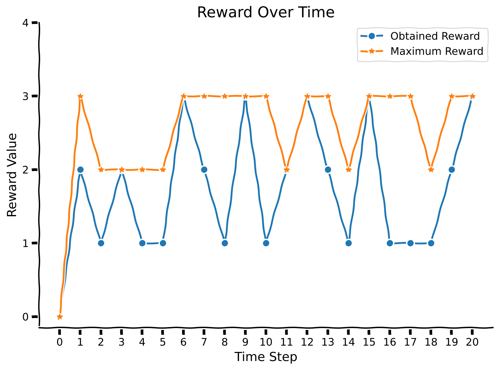
Observe that the maximum reward is always higher than the obtained reward or coincides with it (when the agent luckily chooses a more rewarded color).
Submit your feedback#
Show code cell source
# @title Submit your feedback
content_review(f"{feedback_prefix}_colorful_state")
<__main__._NoOpWidget at 0x7f944f0a1c30>
Section 2: A2C Agent in a Changing Environment#
Estimated timing to here from start of tutorial: 10 minutes
For now, simply run the following 2 cells (ActorCritic class and train_agent function) without exploring their content. You can come back to the code if you have time at the end.
Welcome back our friend from the previous tutorial, the A2C agent ;) Here, we have slightly modified the architecture (replacing LSTM cells with a single linear layer with ReLUs on top of it). The variable num_inputs has also been changed, as the input is now represented by a 3-dimensional vector instead of a single digit. Moreover, we will separate the training and evaluation functions, as we don’t have a “task” and “meta-space of tasks” notion here, so we don’t need to keep track of this.
class ActorCritic(nn.Module):
def __init__(self, hidden_size, num_inputs = 9, num_actions = 2):
"""Initialize Actor-Critic agent."""
super(ActorCritic, self).__init__()
#num_actions is 2 because left/right hand
self.num_actions = num_actions
#num_inputs is 9 because one-hot encoding of action (2) + reward (1) + previous state (2*3 = 6)
self.num_inputs = num_inputs
self.hidden_size = hidden_size
#hyperparameters involved in training (important to keep assigned to the agent)
self.learning_rate = 0.00075 #learning rate for optimizer
self.discount_factor = 0.91 #gamma
self.state_value_estimate_cost = 0.4 #beta_v
self.entropy_cost = 0.001 #beta_e
self.emb = nn.Linear(num_inputs, hidden_size)
self.linear1 = nn.Linear(hidden_size, hidden_size)
self.relu1 = nn.ReLU()
self.critic_linear = nn.Linear(hidden_size, 1)
self.actor_linear = nn.Linear(hidden_size, num_actions)
def forward(self, state):
"""Implement forward pass through agent."""
#at first, input goes through embedding
state = F.linear(state.unsqueeze(0), self.emb.weight.clone(), self.emb.bias)
state = self.relu1(F.linear(state, self.linear1.weight.clone(), self.linear1.bias))
#critic -> value
value = F.linear(state, self.critic_linear.weight.clone(), self.critic_linear.bias)
#actor -> policy
policy_logits = F.linear(state, self.actor_linear.weight.clone(), self.actor_linear.bias)
return value, policy_logits
In the cell below, we define the training procedure for the A2C agent and its evaluation.
def train_agent(env, agent, optimizer_func, mode = 1, num_gradient_steps = 1000, num_trials = 100):
"""Training for agent in changing colorful environment.
Observe that training happens for one particular mode.
Inputs:
- env (ChangingEnv): environment.
- agent (ActorCritic): particular instance of Actor Critic agent to train.
- optimizer_func (torch.Optim): optimizer to use for training.
- mode (int, default = 1): mode of the environment.
- num_gradient_steps (int, default = 1000): number of gradient steps to perform.
- num_trials (int, default = 200): number of times the agent is exposed to the environment per gradient step to be trained.
"""
#reset environment
state = env.reset(mode = mode)
#define optimizer
optimizer = optimizer_func(agent.parameters(), agent.learning_rate, eps = 1e-5)
for _ in range(num_gradient_steps):
#for storing variables for training
log_probs = []
values = []
rewards = []
entropy_term = torch.tensor(0.)
#start conditions
preceding_reward = torch.Tensor([0])
preceding_action = torch.Tensor([0, 0])
for trial in range(num_trials):
#state + reward + one-hot encoding of action; notice that we normalize state before pass to agent!
full_state = torch.cat((torch.from_numpy(state.flatten() / 255).float(), preceding_reward, preceding_action), dim = 0)
value, policy_logits = agent(full_state)
value = value.squeeze(0)
#sample action from policy
dist = torch.distributions.Categorical(logits=policy_logits.squeeze(0))
action = dist.sample()
#perform action to get reward and new state
new_state, reward, _ = env.step(action)
#we normalize reward too
reward /= 4
#update preceding variables
preceding_reward = torch.Tensor([reward])
preceding_action = F.one_hot(action, num_classes=2).float()
state = new_state
#for training
log_prob = dist.log_prob(action)
entropy = dist.entropy()
rewards.append(reward)
values.append(value)
log_probs.append(log_prob)
entropy_term += entropy
#calculating loss
Qval = 0
Qvals = torch.zeros(len(rewards))
for t in reversed(range(len(rewards))):
Qval = rewards[t] + agent.discount_factor * Qval
Qvals[t] = Qval
values = torch.stack(values)
log_probs = torch.stack(log_probs)
advantage = Qvals - values
actor_loss = (-log_probs * advantage.detach()).mean()
critic_loss = advantage.pow(2).mean()
entropy_term = entropy_term / num_trials
#loss incorporates actor/critic terms + entropy
loss = actor_loss + agent.state_value_estimate_cost * critic_loss - agent.entropy_cost * entropy_term
optimizer.zero_grad()
loss.backward()
optimizer.step()
def evaluate_agent(env, agent, mode = 1, num_evaluation_trials = 20):
"""Evaluation for agent in changing colorful environment.
Observe that evaluation happens for one particular mode which can differ from training one.
Inputs:
- env (ChangingEnv): environment.
- agent (ActorCritic): particular instance of Actor Critic agent to train.
- mode (int, default = 1): mode of the environment.
- num_evaluation_trials (int, default = 20): number of times the agent is exposed to the environment to evaluate it (no training happened during this phase).
Outputs:
- scores (list): rewards over all trials of evaluation.
- max_scores (list): maximum rewards over all trials of evaluation.
"""
#reset environment
state = env.reset(mode = mode)
scores = []
max_scores = []
#start conditions
preceding_reward = torch.Tensor([0])
preceding_action = torch.Tensor([0, 0])
for _ in range(num_evaluation_trials):
#state + reward + one-hot encoding of action; notice that we normalize state before pass to agent!
full_state = torch.cat((torch.from_numpy(state.flatten() / 255).float(), preceding_reward, preceding_action), dim = 0)
value, policy_logits = agent(full_state)
value = value.squeeze(0)
#sample action from policy
dist = torch.distributions.Categorical(logits=policy_logits.squeeze(0))
action = dist.sample()
#perform action to get reward and new state
new_state, reward, max_reward = env.step(action)
#update preceding variables; we normalize reward too
preceding_reward = torch.Tensor([reward / 4])
preceding_action = F.one_hot(action, num_classes=2).float()
state = new_state
#add reward to the scores of agent
scores.append(reward)
max_scores.append(max_reward)
return scores, max_scores
In the following code cell, let’s observe the agent’s performance on the first mode after being trained on it. As the training of the agent takes around 3 minutes, we have provided you with an already trained version (but feel free to uncomment the training code to achieve the same results). You will also have the opportunity to train the agent from scratch in the next section!
Make sure you execute this cell to observe the plot!#
Show code cell source
# @title Make sure you execute this cell to observe the plot!
set_seed(42)
#define environment
env = ChangingEnv()
#load agent
agent = torch.load("FirstModeAgent.pt")
#train agent
##UNCOMMENT TO TRAIN
# agent = ActorCritic(hidden_size = 100)
# optimizer_func = optim.RMSprop
# train_agent(env, agent, optimizer_func)
##UNCOMMENT TO TRAIN
#evaluate agent
rewards, max_rewards = evaluate_agent(env, agent)
plot_rewards(rewards, max_rewards)
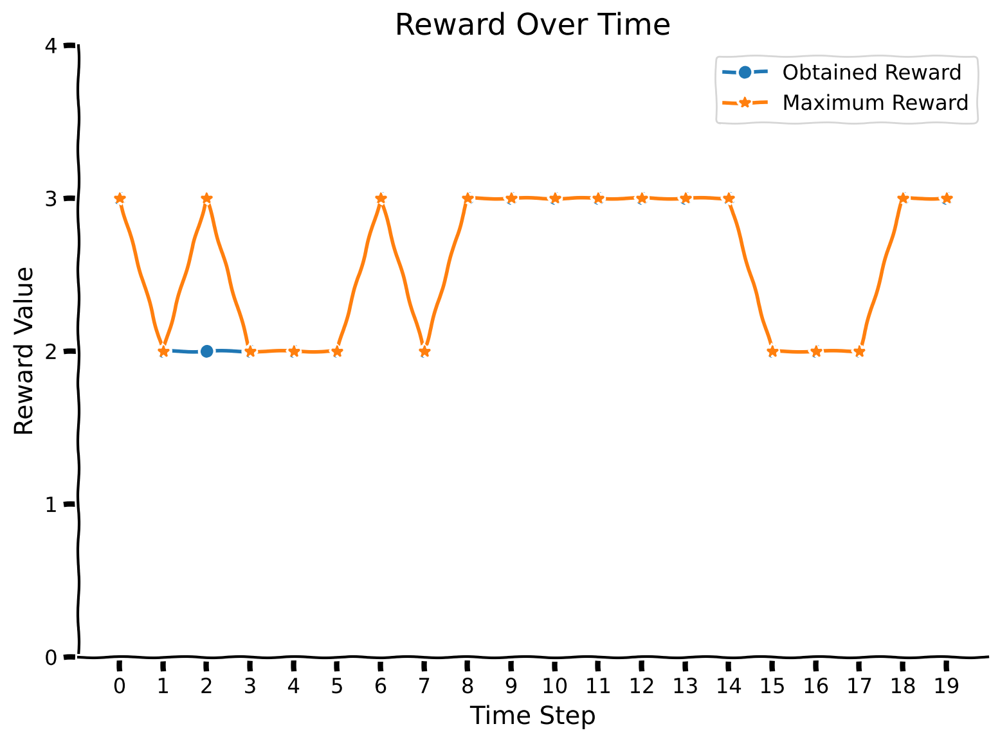
Pretty nice! Let us also observe the confusion matrix. Indeed, it might reveal the weaknesses associated with particular colors. We will increase the number of evaluation trials to obtain more statistically accurate results.
Make sure you execute this cell to observe the plot!#
Show code cell source
# @title Make sure you execute this cell to observe the plot!
set_seed(42)
rewards, max_rewards = evaluate_agent(env, agent, num_evaluation_trials = 5000)
plot_confusion_matrix(rewards, max_rewards)
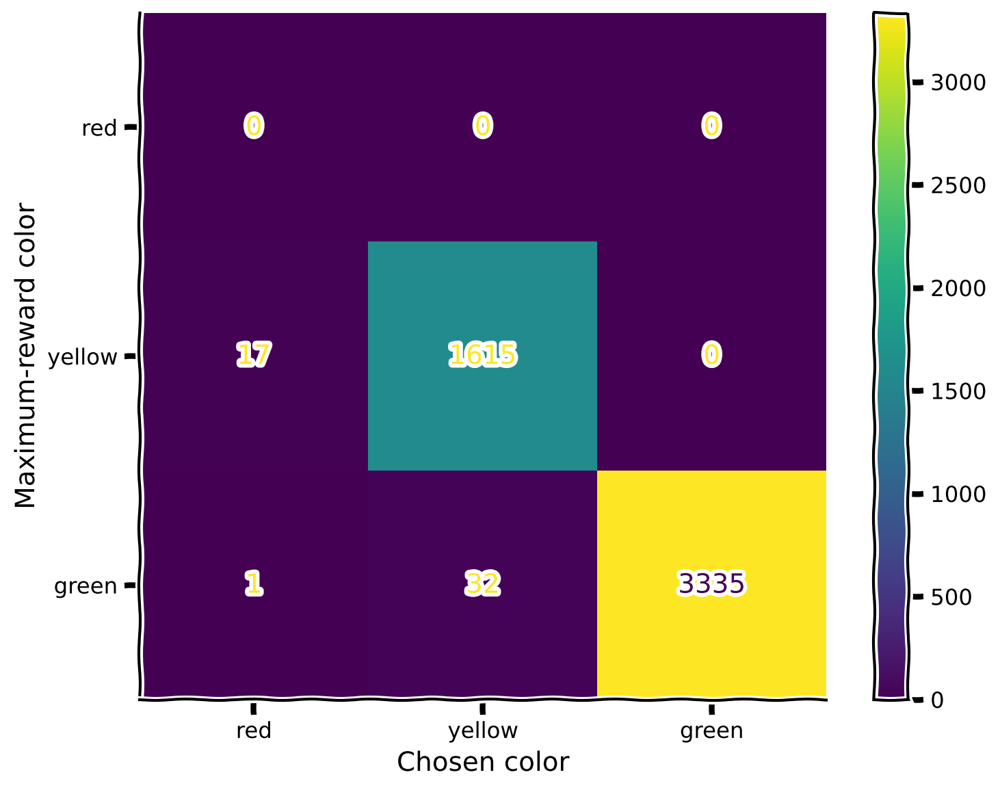
No specific patterns here; the only notable observation (which is also expected) is that whenever colors are close in their rewards, the agent makes more mistakes with those.
Notice that the blue color is missing, as it is indeed excluded from the first mode, as indicated in the code above (repeated here for clarity):
first_mode = ["red", "yellow", "green"]
second_mode = ["red", "green", "blue"]
Also, notice that the color red was never chosen, as it was never a maximum-reward color. Recall the reward values for the specific colors (again, reproducted below for clarity).
color_names_rewards = {
"red": 1,
"yellow": 2,
"green": 3,
"blue": 4
}
This is why, in the confusion matrix, we never see the color red being picked. In both modes, red always exists in company with a color that has a higher reward.
With the details of the confusion matrix hopefully a bit clearer, let us evaluate the agent in the second mode.
Make sure you execute this cell to observe the plot!#
Show code cell source
# @title Make sure you execute this cell to observe the plot!
set_seed(42)
rewards, max_rewards = evaluate_agent(env, agent, mode = 2)
plot_rewards(rewards, max_rewards)
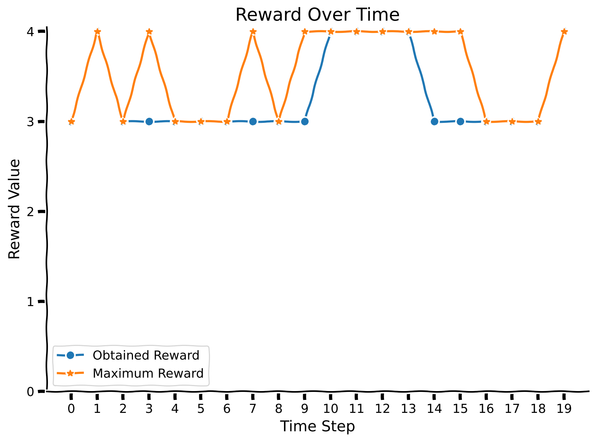
Let’s check the confusion matrix. We can see that the green color is chosen often when the blue one provides a higher reward (which the agent doesn’t know yet).
Make sure you execute this cell to observe the plot!#
Show code cell source
# @title Make sure you execute this cell to observe the plot!
set_seed(42)
rewards, max_rewards = evaluate_agent(env, agent, mode = 2, num_evaluation_trials = 5000)
plot_confusion_matrix(rewards, max_rewards, mode = 2)
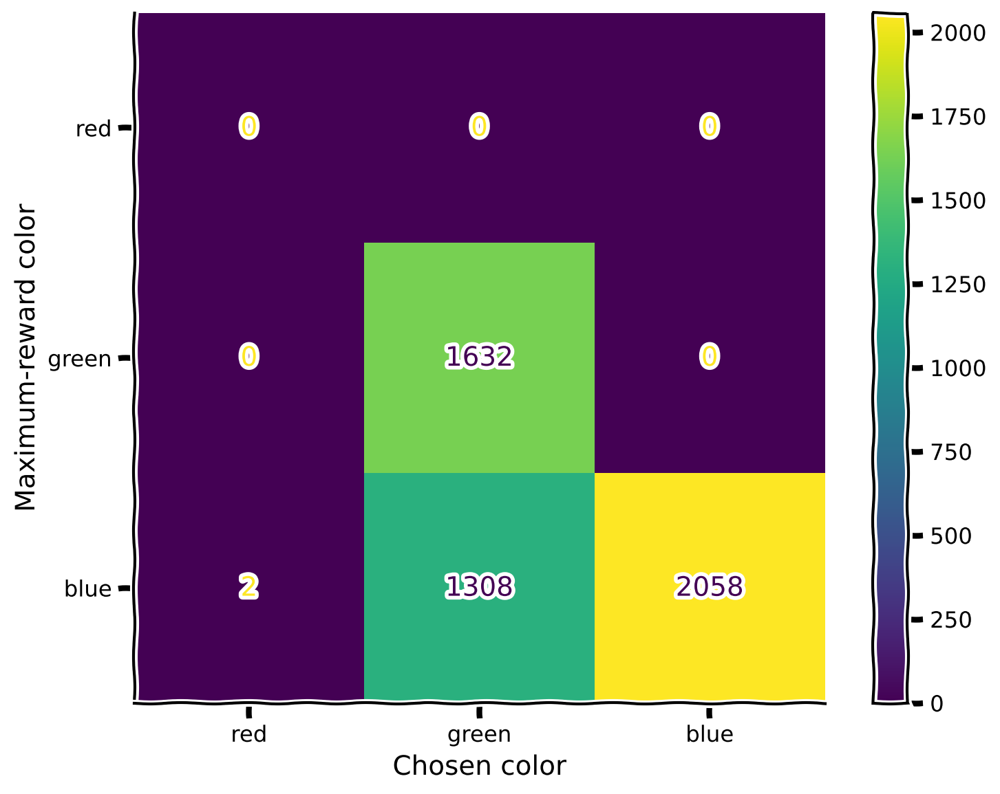
As expected, the agent doesn’t know perfectly how to handle a new color.
Let’s continue training the same agent in the second mode and see if we can improve this situation. Again, you are provided with a pretrained agent.
Make sure you execute this cell to observe the plot!#
Show code cell source
# @title Make sure you execute this cell to observe the plot!
set_seed(42)
#load agent
agent = torch.load("SecondModeAgent.pt")
##UNCOMMENT TO TRAIN
# env = ChangingEnv()
# optimizer_func = optim.RMSprop
# train_agent(env, agent, optimizer_func, mode = 2)
##UNCOMMENT TO TRAIN
rewards, max_rewards = evaluate_agent(env, agent, mode = 2)
plot_rewards(rewards, max_rewards)
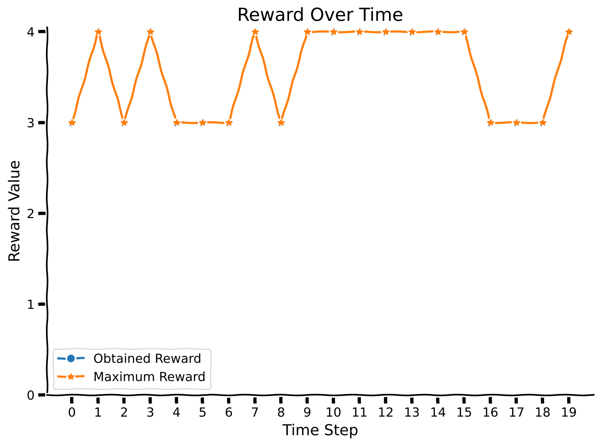
Make sure you execute this cell to observe the plot!#
Show code cell source
# @title Make sure you execute this cell to observe the plot!
set_seed(42)
rewards, max_rewards = evaluate_agent(env, agent, mode = 2, num_evaluation_trials = 5000)
plot_confusion_matrix(rewards, max_rewards, mode = 2)
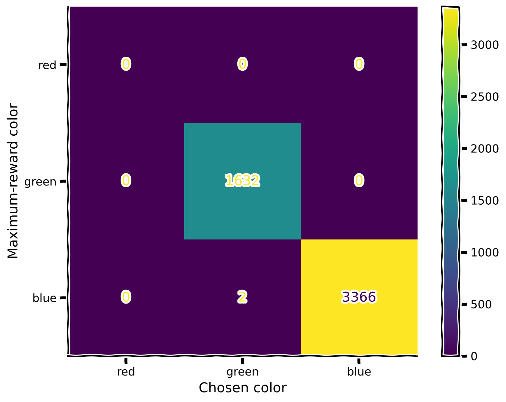
Awesome! The agent has improved its ability to perform in the second mode. But what about the first one? Did the agent forget the previously seen colors?
Make sure you execute this cell to observe the plot!#
Show code cell source
# @title Make sure you execute this cell to observe the plot!
set_seed(42)
rewards, max_rewards = evaluate_agent(env, agent, mode = 1)
plot_rewards(rewards, max_rewards)
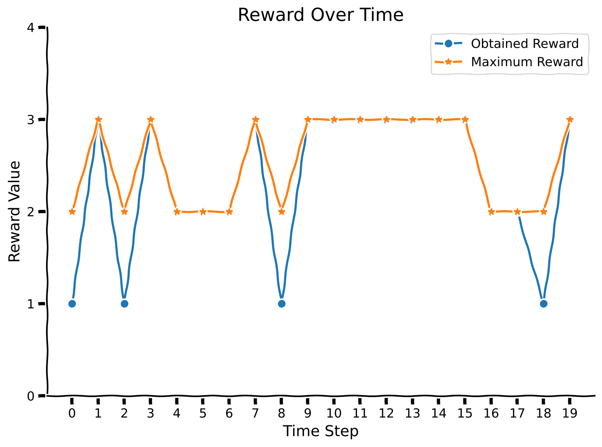
Make sure you execute this cell to observe the plot!#
Show code cell source
# @title Make sure you execute this cell to observe the plot!
set_seed(42)
rewards, max_rewards = evaluate_agent(env, agent, mode = 1, num_evaluation_trials = 5000)
plot_confusion_matrix(rewards, max_rewards)
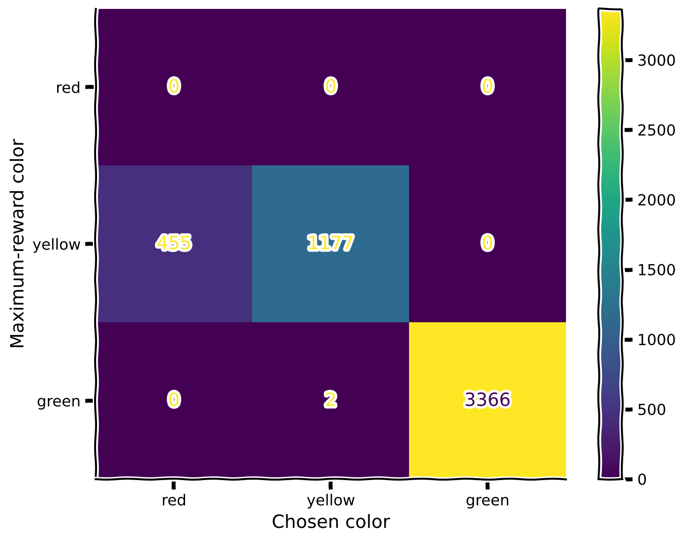
Oops! The introduction of the blue color in the second mode disrupted the learned relationships between red and yellow (since we didn’t include yellow in the second mode). What should we do? In the next section, you will explore a bio-inspired mechanism that allows for correcting this behavior!
Submit your feedback#
Show code cell source
# @title Submit your feedback
content_review(f"{feedback_prefix}_a2c_agent_in_changing_environment")
<__main__._NoOpWidget at 0x7f944b608df0>
Section 3: Replay Buffer#
Estimated timing to here from start of tutorial: 25 minutes
This section discusses the underlying biological inspiration behind the replay buffer and proposes a way that in can be implemented in code and used to tackle the issue of catastrophic forgetting during continual learning.
Coding Exercise 2: Experience Again#
A replay buffer is a mechanism that allows an animal to remember certain experiences within an environment, which can be replayed in its mind later. This can be seen as akin to joint training, as it lets information from a past environment impact current learning.
Each of the gradient steps in the first mode is going to be an “experience” we are going to save, and we will play artificially (train) during training in the second mode. For that, before going to the coding part, let us take a look at the training function defined earlier. Which variables do you think we need to preserve in the proposed auxiliary storage that will allow the agent to implement the replay?
The procedure for retrieving the past experience is as follows: for each gradient step in the new mode, there is going to be one gradient step from a remembered experience from the previous mode.
In this exercise, you need to complete the ReplayBuffer class, which will help you remember information about the training experience. Observe that train_agent is redefined and slightly modified so it accepts ReplayBuffer instance as input.
class ReplayBuffer():
def __init__(self, max_experience = 250, num_trials = 100):
"""Initialize replay buffer.
Notice that when replay buffer is full of experience and new one should be remembered, it replaces existing ones, starting
from the oldest.
Inputs:
- max_experience (int, default = 250): the maximum number of experience (gradient steps) which can be stored.
- num_trials (int, default = 100): number of times the agent is exposed to the environment per gradient step to be trained.
"""
self.max_experience = max_experience
#variable which fully describe experience
self.losses = [0 for _ in range(self.max_experience)]
#number of memory cell to point to (write or overwrite experience)
self.writing_pointer = 0
self.reading_pointer = 0
#to keep track how many experience there were
self.num_experience = 0
def write_experience(self, loss):
"""Write new experience."""
###################################################################
## Fill out the following then remove
raise NotImplementedError("Student exercise: complete retrieval and storing procedure for replay buffer.")
###################################################################
self.losses[...] = ...
#so that pointer is in range of max_experience and will point to the older experience while full
self.writing_pointer = (self.writing_pointer + 1) % self.max_experience
self.num_experience += 1
def read_experience(self):
"""Read existing experience."""
loss = self.losses[...]
#so that pointer is in range of self.max_experience and will point to the older experience while full
self.reading_pointer = (self.reading_pointer + 1) % min(self.max_experience, self.num_experience)
return loss
Test your implementation of ReplayBuffer!#
Show code cell source
# @title Test your implementation of ReplayBuffer!
replay = ReplayBuffer()
loss = 5
replay.write_experience(loss)
if (replay.read_experience() - loss < 1e-2):
print("Your implementation is correct!")
else:
print("Something went wrong, please try again!")
def train_agent_with_replay(env, agent, optimizer_func, replay, mode=1, training_mode="write", num_gradient_steps=1000, num_trials=100):
"""Training for agent in changing colorful environment.
Observe that training happens for one particular mode.
Inputs:
- env (ChangingEnv): environment.
- agent (ActorCritic): particular instance of Actor Critic agent to train.
- optimizer_func (torch.optim.Optimizer): optimizer to use for training.
- replay (ReplayBuffer): replay buffer which is used during training.
- mode (int, default = 1): mode of the environment.
- training_mode (str, default = "write"): training mode with replay buffer ("write", "read").
- num_gradient_steps (int, default = 1000): number of gradient steps to perform.
- num_trials (int, default = 100): number of times the agent is exposed to the environment per gradient step to be trained.
"""
# Reset environment
state = env.reset(mode=mode)
# Define optimizer
optimizer = optimizer_func(agent.parameters(), agent.learning_rate, eps=1e-5)
# Initialize TQDM progress bar
with tqdm(total=num_gradient_steps) as pbar:
for index in range(num_gradient_steps):
# For storing variables for training
log_probs = []
values = []
rewards = []
entropy_term = torch.tensor(0.)
# Start conditions
preceding_reward = torch.Tensor([0])
preceding_action = torch.Tensor([0, 0])
for trial in range(num_trials):
# State + reward + one-hot encoding of action; notice that we normalize state before pass to agent!
full_state = torch.cat((torch.from_numpy(state.flatten() / 255).float(), preceding_reward, preceding_action), dim=0)
value, policy_logits = agent(full_state)
value = value.squeeze(0)
# Sample action from policy
dist = torch.distributions.Categorical(logits=policy_logits.squeeze(0))
action = dist.sample()
# Perform action to get reward and new state
new_state, reward, _ = env.step(action)
# We normalize reward too
reward /= 4
# Update preceding variables
preceding_reward = torch.Tensor([reward])
preceding_action = F.one_hot(action, num_classes=2).float()
state = new_state
# For training
log_prob = dist.log_prob(action)
entropy = dist.entropy()
rewards.append(reward)
values.append(value)
log_probs.append(log_prob)
entropy_term += entropy
# Calculating loss
Qval = 0
Qvals = torch.zeros(len(rewards))
for t in reversed(range(len(rewards))):
Qval = rewards[t] + agent.discount_factor * Qval
Qvals[t] = Qval
values = torch.stack(values)
log_probs = torch.stack(log_probs)
advantage = Qvals - values
actor_loss = (-log_probs * advantage.detach()).mean()
critic_loss = advantage.pow(2).mean()
entropy_term = entropy_term / num_trials
# Loss incorporates actor/critic terms + entropy
loss = actor_loss + agent.state_value_estimate_cost * critic_loss - agent.entropy_cost * entropy_term
optimizer.zero_grad()
loss.backward(retain_graph=True)
optimizer.step()
# Write this training example into memory
if training_mode == "write":
replay.write_experience(loss)
# Retrieve previous experience
if training_mode == "read":
replay_loss = replay.read_experience()
optimizer.zero_grad()
replay_loss.backward(retain_graph=True)
optimizer.step()
# Update progress bar
pbar.update(1)
First, we are going to train the new agent in the first mode using the writing mode of the replay buffer. Then, during the training in the second mode, we will incorporate reading from this replay buffer and observe whether it impacts the agent’s performance.
The training time will take around 3 minutes.
Make sure you execute this cell to observe the plot!#
Show code cell source
# @title Make sure you execute this cell to observe the plot!
set_seed(42)
#define environment
env = ChangingEnv()
replay = ReplayBufferSolution()
#define agent and optimizer
agent = ActorCritic(hidden_size = 100)
optimizer_func = optim.RMSprop
#train agent
train_agent_with_replay(env, agent, optimizer_func, replay)
rewards, max_rewards = evaluate_agent(env, agent, num_evaluation_trials = 5000)
plot_confusion_matrix(rewards, max_rewards)
---------------------------------------------------------------------------
IndexError Traceback (most recent call last)
File /opt/hostedtoolcache/Python/3.10.19/x64/lib/python3.10/site-packages/IPython/core/formatters.py:770, in PlainTextFormatter.__call__(self, obj)
763 stream = StringIO()
764 printer = pretty.RepresentationPrinter(stream, self.verbose,
765 self.max_width, self.newline,
766 max_seq_length=self.max_seq_length,
767 singleton_pprinters=self.singleton_printers,
768 type_pprinters=self.type_printers,
769 deferred_pprinters=self.deferred_printers)
--> 770 printer.pretty(obj)
771 printer.flush()
772 return stream.getvalue()
File /opt/hostedtoolcache/Python/3.10.19/x64/lib/python3.10/site-packages/IPython/lib/pretty.py:408, in RepresentationPrinter.pretty(self, obj)
406 meth = cls._repr_pretty_
407 if callable(meth):
--> 408 return meth(obj, self, cycle)
409 if (
410 cls is not object
411 # check if cls defines __repr__
(...)
417 and callable(_safe_getattr(cls, "__repr__", None))
418 ):
419 return _repr_pprint(obj, self, cycle)
File /opt/hostedtoolcache/Python/3.10.19/x64/lib/python3.10/site-packages/tqdm/notebook.py:87, in TqdmHBox._repr_pretty_(self, pp, *_, **__)
86 def _repr_pretty_(self, pp, *_, **__):
---> 87 pp.text(self.__repr__(True))
File /opt/hostedtoolcache/Python/3.10.19/x64/lib/python3.10/site-packages/tqdm/notebook.py:84, in TqdmHBox.__repr__(self, pretty)
82 if pbar is None:
83 return super(TqdmHBox, self).__repr__()
---> 84 return pbar.format_meter(**self._json_(pretty))
File /opt/hostedtoolcache/Python/3.10.19/x64/lib/python3.10/site-packages/tqdm/notebook.py:75, in TqdmHBox._json_(self, pretty)
73 if pbar is None:
74 return {}
---> 75 d = pbar.format_dict
76 if pretty is not None:
77 d["ascii"] = not pretty
File /opt/hostedtoolcache/Python/3.10.19/x64/lib/python3.10/site-packages/tqdm/std.py:1462, in tqdm.format_dict(self)
1452 if self.dynamic_ncols:
1453 self.ncols, self.nrows = self.dynamic_ncols(self.fp)
1454 return {
1455 'n': self.n, 'total': self.total,
1456 'elapsed': self._time() - self.start_t if hasattr(self, 'start_t') else 0,
1457 'ncols': self.ncols, 'nrows': self.nrows, 'prefix': self.desc,
1458 'ascii': self.ascii, 'unit': self.unit, 'unit_scale': self.unit_scale,
1459 'rate': self._ema_dn() / self._ema_dt() if self._ema_dt() else None,
1460 'bar_format': self.bar_format, 'postfix': self.postfix,
1461 'unit_divisor': self.unit_divisor, 'initial': self.initial,
-> 1462 'colour': self.colour}
File /opt/hostedtoolcache/Python/3.10.19/x64/lib/python3.10/site-packages/tqdm/notebook.py:195, in tqdm_notebook.colour(self)
192 @property
193 def colour(self):
194 if hasattr(self, 'container'):
--> 195 return self.container.children[-2].style.bar_color
IndexError: list index out of range
---------------------------------------------------------------------------
IndexError Traceback (most recent call last)
Cell In[31], line 14
11 optimizer_func = optim.RMSprop
13 #train agent
---> 14 train_agent_with_replay(env, agent, optimizer_func, replay)
16 rewards, max_rewards = evaluate_agent(env, agent, num_evaluation_trials = 5000)
17 plot_confusion_matrix(rewards, max_rewards)
Cell In[30], line 22, in train_agent_with_replay(env, agent, optimizer_func, replay, mode, training_mode, num_gradient_steps, num_trials)
19 optimizer = optimizer_func(agent.parameters(), agent.learning_rate, eps=1e-5)
21 # Initialize TQDM progress bar
---> 22 with tqdm(total=num_gradient_steps) as pbar:
23 for index in range(num_gradient_steps):
24 # For storing variables for training
25 log_probs = []
File /opt/hostedtoolcache/Python/3.10.19/x64/lib/python3.10/site-packages/tqdm/notebook.py:241, in tqdm_notebook.__init__(self, *args, **kwargs)
239 self.displayed = True
240 self.disp = self.display
--> 241 self.colour = colour
243 # Print initial bar state
244 if not self.disable:
File /opt/hostedtoolcache/Python/3.10.19/x64/lib/python3.10/site-packages/tqdm/notebook.py:200, in tqdm_notebook.colour(self, bar_color)
197 @colour.setter
198 def colour(self, bar_color):
199 if hasattr(self, 'container'):
--> 200 self.container.children[-2].style.bar_color = bar_color
IndexError: list index out of range
Great! We’ve trained the agent in the first mode and saved the experience in the replay buffer. Now, let us change the mode to “read” and train the agent in the second mode while replaying the saved experience with each gradient step of the new one. The observed plot is the confusion matrix for the second mode.
set_seed(42)
train_agent_with_replay(env, agent, optimizer_func, replay, mode = 2, training_mode = "read")
---------------------------------------------------------------------------
IndexError Traceback (most recent call last)
File /opt/hostedtoolcache/Python/3.10.19/x64/lib/python3.10/site-packages/IPython/core/formatters.py:770, in PlainTextFormatter.__call__(self, obj)
763 stream = StringIO()
764 printer = pretty.RepresentationPrinter(stream, self.verbose,
765 self.max_width, self.newline,
766 max_seq_length=self.max_seq_length,
767 singleton_pprinters=self.singleton_printers,
768 type_pprinters=self.type_printers,
769 deferred_pprinters=self.deferred_printers)
--> 770 printer.pretty(obj)
771 printer.flush()
772 return stream.getvalue()
File /opt/hostedtoolcache/Python/3.10.19/x64/lib/python3.10/site-packages/IPython/lib/pretty.py:408, in RepresentationPrinter.pretty(self, obj)
406 meth = cls._repr_pretty_
407 if callable(meth):
--> 408 return meth(obj, self, cycle)
409 if (
410 cls is not object
411 # check if cls defines __repr__
(...)
417 and callable(_safe_getattr(cls, "__repr__", None))
418 ):
419 return _repr_pprint(obj, self, cycle)
File /opt/hostedtoolcache/Python/3.10.19/x64/lib/python3.10/site-packages/tqdm/notebook.py:87, in TqdmHBox._repr_pretty_(self, pp, *_, **__)
86 def _repr_pretty_(self, pp, *_, **__):
---> 87 pp.text(self.__repr__(True))
File /opt/hostedtoolcache/Python/3.10.19/x64/lib/python3.10/site-packages/tqdm/notebook.py:84, in TqdmHBox.__repr__(self, pretty)
82 if pbar is None:
83 return super(TqdmHBox, self).__repr__()
---> 84 return pbar.format_meter(**self._json_(pretty))
File /opt/hostedtoolcache/Python/3.10.19/x64/lib/python3.10/site-packages/tqdm/notebook.py:75, in TqdmHBox._json_(self, pretty)
73 if pbar is None:
74 return {}
---> 75 d = pbar.format_dict
76 if pretty is not None:
77 d["ascii"] = not pretty
File /opt/hostedtoolcache/Python/3.10.19/x64/lib/python3.10/site-packages/tqdm/std.py:1462, in tqdm.format_dict(self)
1452 if self.dynamic_ncols:
1453 self.ncols, self.nrows = self.dynamic_ncols(self.fp)
1454 return {
1455 'n': self.n, 'total': self.total,
1456 'elapsed': self._time() - self.start_t if hasattr(self, 'start_t') else 0,
1457 'ncols': self.ncols, 'nrows': self.nrows, 'prefix': self.desc,
1458 'ascii': self.ascii, 'unit': self.unit, 'unit_scale': self.unit_scale,
1459 'rate': self._ema_dn() / self._ema_dt() if self._ema_dt() else None,
1460 'bar_format': self.bar_format, 'postfix': self.postfix,
1461 'unit_divisor': self.unit_divisor, 'initial': self.initial,
-> 1462 'colour': self.colour}
File /opt/hostedtoolcache/Python/3.10.19/x64/lib/python3.10/site-packages/tqdm/notebook.py:195, in tqdm_notebook.colour(self)
192 @property
193 def colour(self):
194 if hasattr(self, 'container'):
--> 195 return self.container.children[-2].style.bar_color
IndexError: list index out of range
---------------------------------------------------------------------------
IndexError Traceback (most recent call last)
Cell In[32], line 3
1 set_seed(42)
----> 3 train_agent_with_replay(env, agent, optimizer_func, replay, mode = 2, training_mode = "read")
Cell In[30], line 22, in train_agent_with_replay(env, agent, optimizer_func, replay, mode, training_mode, num_gradient_steps, num_trials)
19 optimizer = optimizer_func(agent.parameters(), agent.learning_rate, eps=1e-5)
21 # Initialize TQDM progress bar
---> 22 with tqdm(total=num_gradient_steps) as pbar:
23 for index in range(num_gradient_steps):
24 # For storing variables for training
25 log_probs = []
File /opt/hostedtoolcache/Python/3.10.19/x64/lib/python3.10/site-packages/tqdm/notebook.py:241, in tqdm_notebook.__init__(self, *args, **kwargs)
239 self.displayed = True
240 self.disp = self.display
--> 241 self.colour = colour
243 # Print initial bar state
244 if not self.disable:
File /opt/hostedtoolcache/Python/3.10.19/x64/lib/python3.10/site-packages/tqdm/notebook.py:200, in tqdm_notebook.colour(self, bar_color)
197 @colour.setter
198 def colour(self, bar_color):
199 if hasattr(self, 'container'):
--> 200 self.container.children[-2].style.bar_color = bar_color
IndexError: list index out of range
Make sure you execute this cell to observe the plot!#
Show code cell source
# @title Make sure you execute this cell to observe the plot!
set_seed(42)
rewards, max_rewards = evaluate_agent(env, agent, mode = 2, num_evaluation_trials = 5000)
plot_confusion_matrix(rewards, max_rewards, mode = 2)
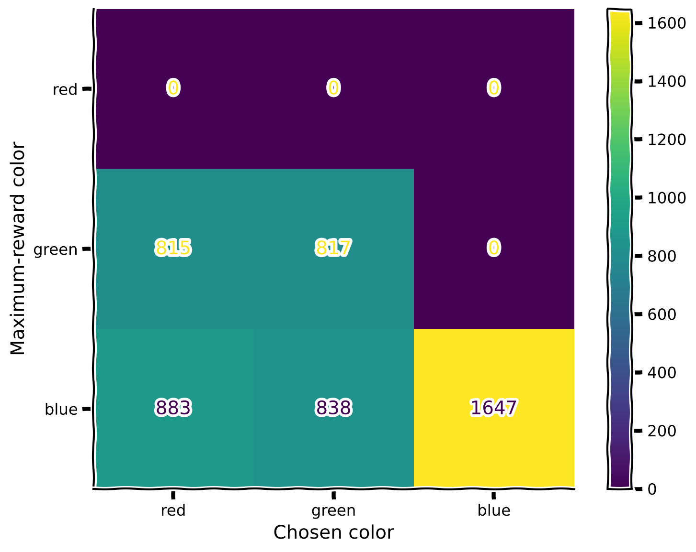
Make sure you execute this cell to observe the plot!#
Show code cell source
# @title Make sure you execute this cell to observe the plot!
set_seed(42)
rewards, max_rewards = evaluate_agent(env, agent, num_evaluation_trials = 5000)
plot_confusion_matrix(rewards, max_rewards)
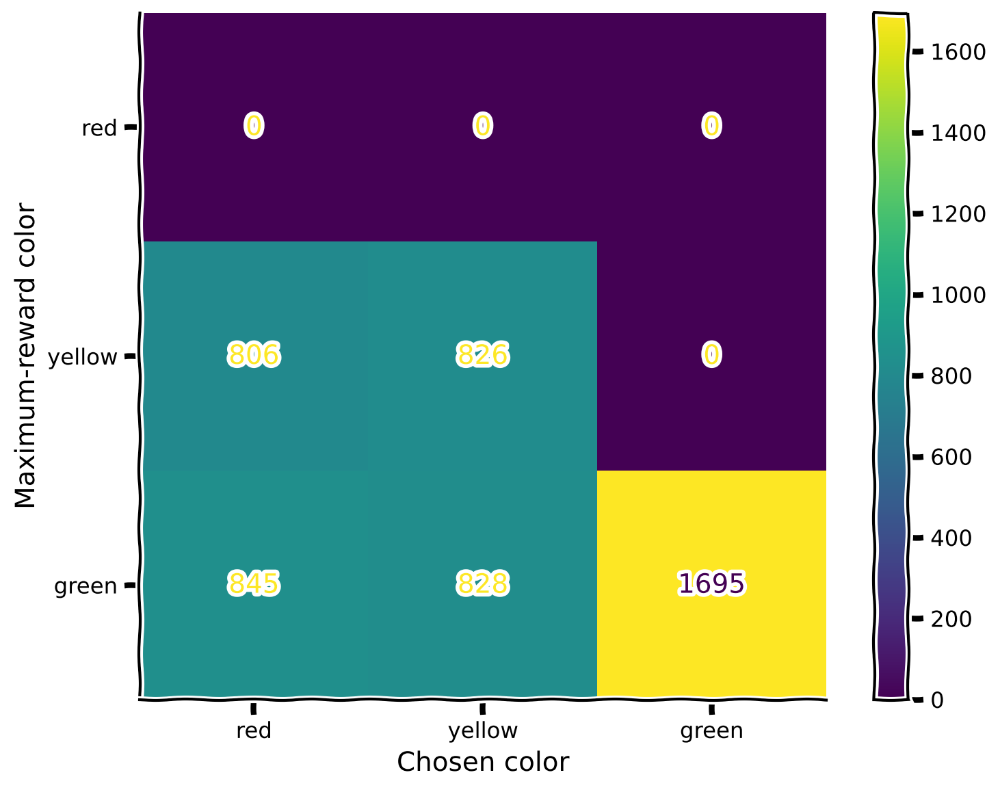
Perfect match!
Submit your feedback#
Show code cell source
# @title Submit your feedback
content_review(f"{feedback_prefix}_experience_again")
<__main__._NoOpWidget at 0x7f944b63d000>
Summary#
Estimated timing of tutorial: 40 minutes
Here we have learned:
Reinforcement learning also suffers from forgetting after learning a new distribution.
Replay is a biologically-inspired way to learn from memories of past actions and rewards, thus preventing forgetting.
The Big Picture#
Replay mechanisms serve as a foundational bridge between past and present knowledge in both biological and artificial learning systems, enabling the critical ability to learn continuously without catastrophically forgetting previous skills. By selectively revisiting and consolidating important experiences, replay helps systems extract generalizable patterns that extend beyond specific tasks or contexts. In biological systems, hippocampal replay during sleep and rest periods allows the brain to transfer episodic memories to neocortical regions where they can inform future behavior across varied situations. Similarly, in artificial systems, experience replay buffers and generative replay techniques significantly improve an agent’s ability to transfer knowledge across domains and protect against overfitting to recent experiences.
We hope that you have found today’s tutorials on Macrolearning insightful. There is a lot of material we covered today and we’re almost at the end of the course! Tomorrow, our final day of content, will introduce some exciting concepts that are still unsolved and so its appropriately named “Mysteries”. We will look into more speculative attempts to tackle some of the larger / grander outstanding questions in NeuroAI.